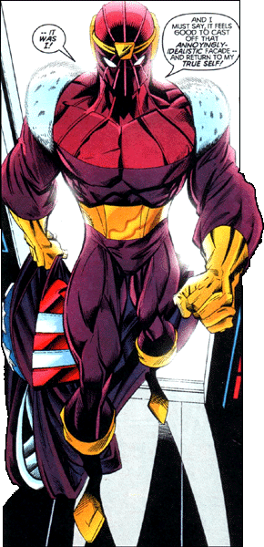

Baron Helmet Zemo, the 13th Zemo
Baron Helmut Zemo, the thirteenth Zemo, is a man born to a legacy of evil. His father Heinrich Zemo was one of the most brilliant scientists working for the Nazis in World War II. Heinrich managed to accidentally kill himself in a fight with Captain America, but even before then Zemo blamed Captain America for all his life's problems. Recently Zemo has come to realize that Cap needn't be the focal point of his life, and has decided to give world domination a try.